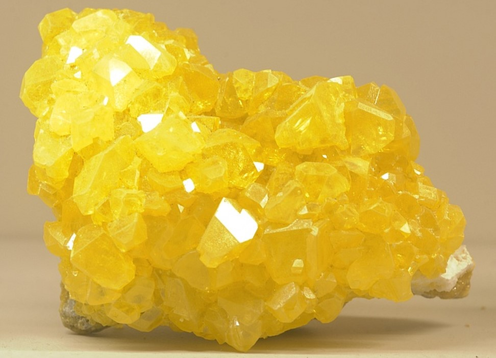
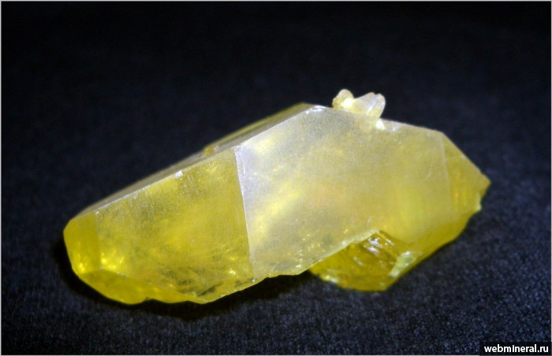
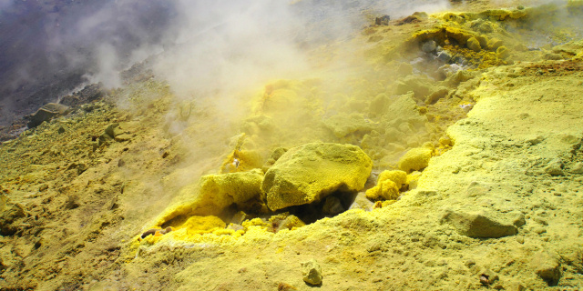

Сера
Се́ра (химический символ — S, от лат. sulpur, sulphur, sulfur) — химический элемент 16-й группы (по устаревшей классификации — главной подгруппы шестой группы, VIA), третьего периода периодической системы химических элементов Д. И. Менделеева, с атомным номером 16. Простое вещество сера — это светло-жёлтый порошкообразный неметалл, относится к халькогенам. В водородных и кислородных соединения

Сера в самородном состоянии, а также в виде сернистых соединений известна с древнейших времён (упоминается в Библии), использовать начали около 2000 до н. э. (в Египте серу применяли для дезинфекции, беления тканей и др.). Сера входила в состав горючих смесей для военных целей (например, греческого огня), а также использовалась для окуривания (для дезинфекции, при религиозных обрядах). В Китае 8

Около 50 % производимой серы используют для получения H2SO4, около 25 % – сульфитов, 10–15 % – для борьбы с вредителями и болезнями сельскохозяйственных культур (главным образом винограда и хлопчатника), около 10 % – в резиновой промышленности (вулканизующий агент). Серу применяют в производстве красителей, взрывчатых веществ, искусственных волокон, люминофоров, CS2, сульфидов, в органическом синт
Серу добывают из самородных руд, получают окислением H2S или восстановлением SO2. Для добычи из руд часто используют геотехнологический метод – выплавку серы путём подачи в рудный пласт горячего водяного пара; затем сжатым воздухом расплав поднимают на поверхность. Другие методы включают выплавку из дроблёной руды в камерных печах, возгонку, извлечение из руд сероуглеродом, обработку в автоклавах горячим паром и др. Серу получают из сырой нефти и отходов нефтепереработки, промышленных газов (генераторный, коксовый, газы нефтепереработки) и природных газов, содержащих H2S, путём обработки газов щелочными растворами с последующим окислением. Попутное извлечение серы при переработке сульфидных руд заключается в восстановлении SO2 коксом. Из самородных руд получается природная комовая сера, из H2S и SO2 – гaзовая комовая; природная комовая сера, очищенная перегонкой, – рафинированная сера, сконденсированная из паров выше tпл и разлитая из жидкого состояния в формы – черенковая сера, сконденсированная в твёрдое состояние из паров – «серный цвет». Высокодисперсная сера называется коллоидной. Для очистки серы используют химические методы (обработка концентрированными HNO3 и H2SO4, промывка, сублимация в вакууме); глубокую очистку ведут дистилляцией и ректификацией. Высокочистая сера содержит 10–5–10–6 % примесей. Объём мирового производства серы около 80 млн т/год (2020).

Сера не растворяется в воде, плохо проводит ток и тепло, растворяется в сероуглероде, бензоле, дихлорэтане и некоторых других органических растворителях. При нагревании активно взаимодействует с большинством металлов и неметаллов. Горюча и взрывоопасна. Производства серы и склады требуют особых мер предосторожностей, включая использование инструментов из неискрящих материалов и специальных ультрафиолетовых датчиков для обнаружения пламени.